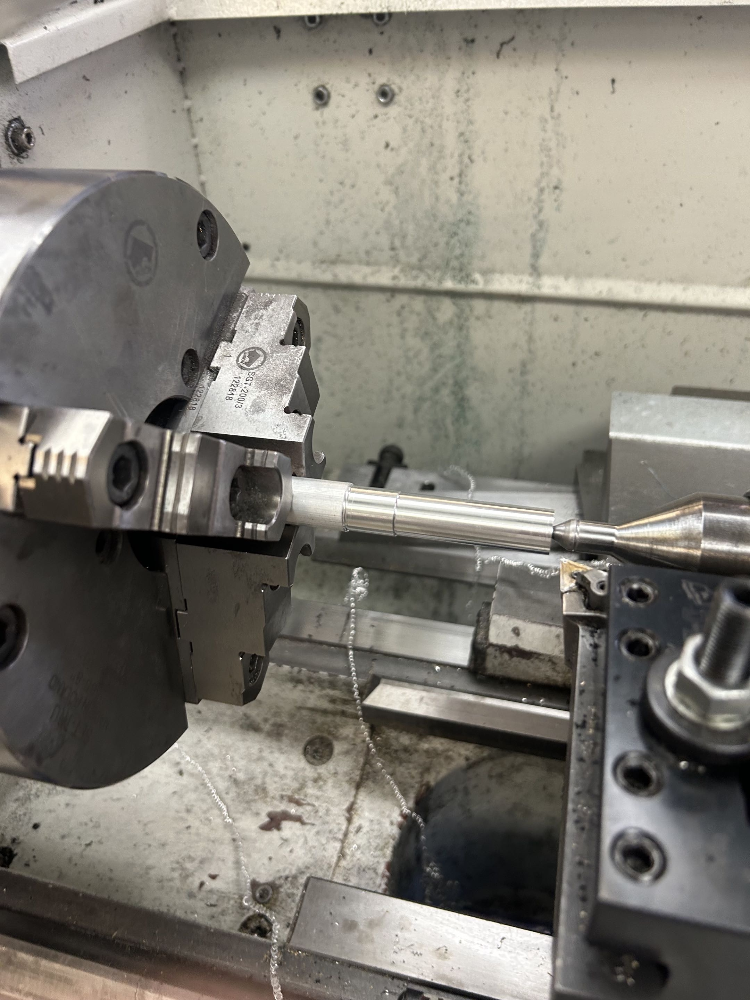

MySwing | IMU Golf Swing Tracking Project
Project Overview

Figure 1: Integrated Prototype
This project started as a simple idea to see if I could actually read a golf swing using a sensor inside a grip. I have played golf most of my life and have also designed and built clubs, so I already had a good feel for what a swing should look like. The goal was to take that feel and see if I could capture it with real data. It quickly turned into a mix of electronics, machining, coding, and a lot of trial and error. At this point the system can estimate club speed, distance, and shot shape pretty consistently, and it is good enough to tell the difference between different swings. The main thing I am still working on is the visualization side, which has been harder than everything else combined.
Electronics and Testing

Figure 2: Breadboard Setup
I started with a breadboard and just focused on getting something to work. The first version had nothing to do with golf, it was just rotating a cube on a screen using IMU data to prove the sensor pipeline worked. Once that was stable I added a vibration motor and started building out the full circuit with the ESP32, resistors, and protection for the motor. A bigger issue than I expected was the IMU itself. A lot of sensors worked fine at low speeds, but once I started swinging faster the data either got noisy or completely unusable. I ended up going through multiple options until I found something small enough to fit inside the shaft and still reliable under real motion.
Packaging and Physical Build

Figure 3: Machining the Prototype
Once the electronics worked, the next step was getting everything into a usable form. I first made a simple 3D printed housing just to figure out how to fit the battery, board, wiring, and motor without it turning into a mess. After that I moved to a metal version so the device actually felt like something you would swing. The shaft and weighted ball were machined on a lathe and threaded together, then reinforced with epoxy so they would not come loose. Adding mass to the end made a huge difference. The swing felt more realistic and the data became more consistent since the motion was closer to an actual club.
Making the Data Useful

Figure 4: Output Data
The hardest part of the project was not collecting data, it was turning it into something meaningful. I used pitch and roll to estimate clubface orientation and looked at acceleration to break the swing into different phases. Around impact, small changes in orientation give a good idea of whether the face is open or closed. To get this working I recorded around thirty swings and logged thousands of lines of data, then compared patterns against what I knew the swing was doing. From there it was a lot of tuning and adjusting thresholds until the outputs started lining up with reality. It is not a perfect physics model, it is more pattern based, but it works well enough to consistently tell the difference between swing types.
Interface and Testing
I originally tried building the interface in Swift but switched to a web based setup so I could move faster. The ESP32 sends data over Bluetooth and the site handles processing and display. This made it much easier to test and iterate because I could actually see what the swing looked like instead of just reading numbers. I used a mix of my own code and codex to create some visualization, but the focus has always been on understanding the data and making sure the output matches what is actually happening in the swing.
3D Visualization
Figure 6: Early Visualization
This is the part that is still not solved. The IMU only tells me what the grip is doing, but I want to show a full swing. That means either estimating the rest of the body or using a predefined motion and driving it with the data. Right now I am using a basic swing model and linking the club motion to real measurements. It is still rough, but it is moving in the right direction and is the main thing I would improve next.
Provisional Patent
After getting the first full prototype working, I filed a provisional patent titled “Portable weighted smart golf swing training grip with embedded motion tracking and haptic tempo feedback.” I am not pushing this as a product right now, but I wanted to protect the idea while continuing to develop it as a project.